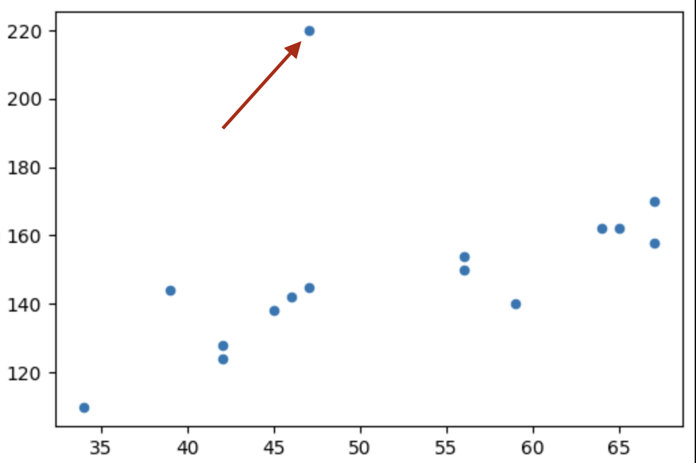

Tensors Basics and Linear Regression¶
Machine Learning and Deep Learning Series¶
Table of Contents¶
Prerequisite:¶
- Minimum Understanding of Vectors, Linear Algebra, Matrix
- Intermediate Knowledge in Python (list slicing, indexing etc ..)
- Google Colab Account/Kaggle Account
Tensors and Vectors¶
 Credit: visagetechnologies.com
Credit: visagetechnologies.com
Definition: A Tensor is a finite table of neumerical values indexing along several dimensions.
- 0d tensor → it's a scalar (e.g. 5)
- 1d tensor → it's vector
- 2d tensor → it's a matrix (e.g. grascale image, DataFrame)
- 3d tensor → it can be an Image (coloured)
- 4d tensor → video (a sequence of multi channel images)
- and so on ..
Why we use Tensors?¶
From simple matrix multiplication to complex convolutions and pooling in CNNs, it is used everywhere
- Through Tensors we can represent more diverse datatypes
- Manipulating data through this structure is very fast in CPUs and GPUs
Difference b/w Tensors and Vectors¶

The "dimension" of a vector in linear algebra is its number of coefficients,
while the "dimension" of a tensor is the number of indeices to specify one of its coefficients.
Why use PyTorch¶
- We can make the calculations on CPU and GPUs
- Automatic Gradient Calculation (more on this later)
- More cutomisable controls over the program
- Optimizers
- Data I/O
PyTorch Installation:¶
- Go to the Official PyTorch Website
- Select your platform (options)
- Copy the Command and paste it in the terminal
Basics of PyTorch¶
'2.2.1'
False
I am using an M1 Mac so Cuda is not available. But there is an accelerator called mps (it runs on mac GPU)
True
Basic Tensor declaration
tensor([2, 3, 4])
tensor([[2, 3, 4],
[5, 6, 8]])
(torch.Size([3]), torch.Size([2, 3]))
# Similarly we can get their number of dimensions also
print(f"Dimension of t1: {t1.dim()}\nDimension of t2: {t2.dim()}")
Dimension of t1: 1
Dimension of t2: 2
It provides aggregation functions like sum, mean etc.
tensor(9)
tensor(28)
We can see it returns a 0 dimensional tensor. To get it in form of a scalar we can use .item() method.
28
It offers elementwise operations unlike a python list (and like numpy, but it has GPU acceleration)
x_list = [10., 20., 30.]
y_list = [[1., 3., 4.]]
x = torch.tensor([10., 20., 30.])
y = torch.tensor([1., 3., 4.])
print(f"PyTorch Tensor Output: {x + y}\nPython List Output: {x_list + y_list}")
PyTorch Tensor Output: tensor([11., 23., 34.])
Python List Output: [10.0, 20.0, 30.0, [1.0, 3.0, 4.0]]
As NumPy we can have random tensors too.
tensor([[6, 4, 2, 4],
[7, 7, 3, 5]])
Linear Regression¶
For Linear Regression we assume that our features (X) depends on y linearly, and try to fit a line with approprieate slope and bias values.
In order to explain this I'm going to take a small toy dataset.
| age | blood_pressure | |
|---|---|---|
| 0 | 39 | 144 |
| 1 | 47 | 220 |
| 2 | 45 | 138 |
| 3 | 47 | 145 |
| 4 | 65 | 162 |
If we plot a graph we can notice a linear relationship between the age and blood_pressure
Also the data is not entirely linear, it has some noise and also some outliers as we can see in the plot.

Now we have to define the model (linear regressor) which is very simple The equation of the model is:
y = w x + b¶
where,
- w → weight (slope)
- b → bias (offset)
First we initialized with a random value (for now just take it as zero).
And plot the line, calculate the loss either.. MSE (mean squared error) or MAE (mean absolute error))